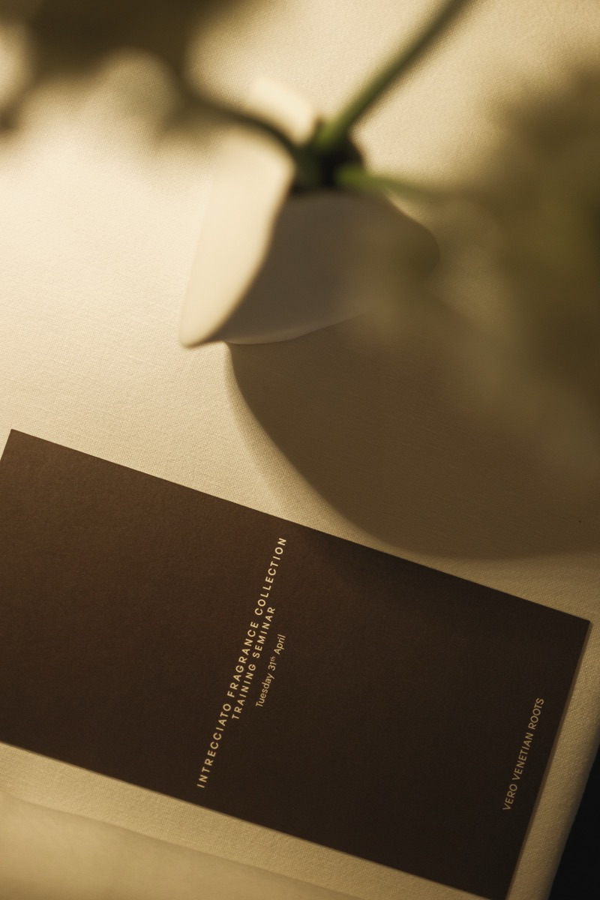
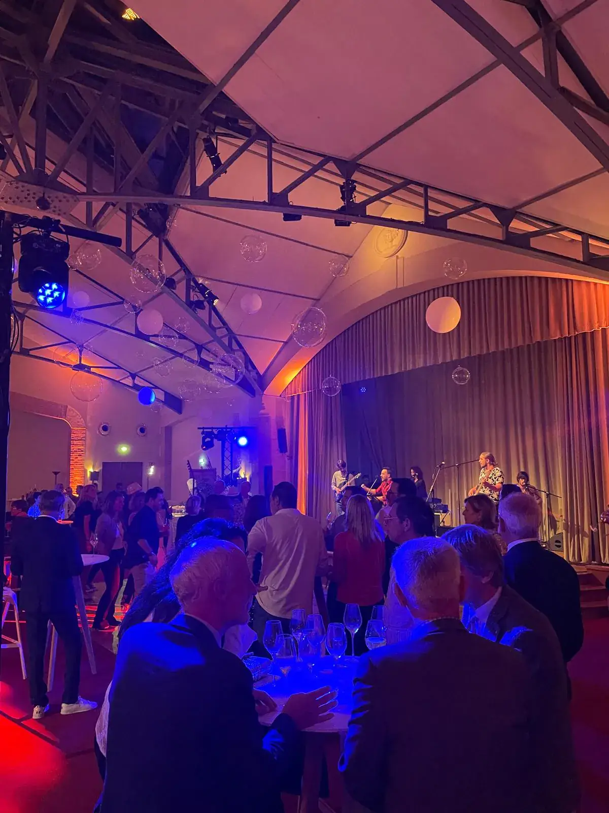
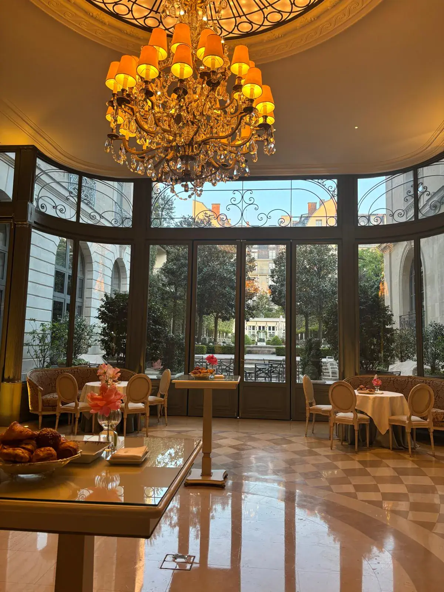

Séminaires, incentives, lancements et voyages de presse à Marrakech et dans tout le Maroc. Une équipe installée entre Paris et Casablanca, des prestataires locaux travaillés en direct, une équipe dédiée du brief au dernier transfert.
L'agence Dare-Dare est une agence événementielle et une DMC au Maroc : nous produisons à Marrakech des séminaires et incentives, des soirées de marque, des lancements de produits, des événements influence et des voyages de presse. Notre équipe est installée entre Paris et Casablanca et travaille ses prestataires locaux en direct. Une équipe dédiée, en français, du brief au dernier transfert.
Marques de luxe, de beauté et de tech, grands groupes, agences en quête d'une DMC fiable.
Vols et transferts
Billets, accueil à l'aéroport, transferts, hébergement, rooming list.
Réponse
Sous 24 h.
Prix et jauge
Saisons
Mars à mai et septembre à novembre. L'été est très chaud, l'hiver doux le jour et frais le soir.
Prix
Sur devis détaillé poste par poste. Nous n'affichons pas de prix type : chaque projet a le sien.
Jauge
Du comité de direction de 20 personnes à la convention de plusieurs centaines. Du dîner de 10 personnes au show de plusieurs milliers. Le même soin, quelle que soit la taille.
Accueil à la sortie de l'aéroport, bagages pris en charge, navettes sans attente
Welcome pack dans chaque chambre : programme, chèche, babouches, douceurs locales
Bagagerie les jours de départ, horaires calés sur ceux des vols
Hébergement
Hôtels et riads, rooming list tenue à jour
Blocs de chambres : date de release et clause d'attrition négociées au contrat
Régimes alimentaires et accessibilité PMR prévus dès le brief
Table et boissons
Cuisine marocaine de partage ou menu contemporain, cuisine du riad ou traiteur de confiance
Alcool servi seulement dans les lieux autorisés, carte sans alcool toujours prévue
Quantités confirmées au plus près, pour limiter le gaspillage
Technique et décor
Son, écrans, captation, traduction si besoin
Tapis, lanternes, bougies, mobilier : location et réemploi plutôt qu'achat
Dans le désert : eau, électricité, froid, confort et sécurité acheminés
Programme et animation
Musiciens gnaoua, quatuor, DJ
Ateliers de cuisine, artisans de la médina, hammam, quad ou chameau à Agafay
Plusieurs options en parallèle : chacun choisit l'activité qui lui ressemble
Équipes et administratif
Hôtesses référencées à Casablanca, briefées 30 minutes avant l'événement
Autorisations (drone, tournage, voie publique) vérifiées avant toute proposition
Prestataires locaux payés au juste prix ; factures prévues pour payer vite
Notre équipe a produit…
Pour Samsung, Chanel, Dior, Bottega Veneta, Hermès, Longchamp, Mugler, Moët & Chandon, Deloitte, Pernod Ricard, BNP, Maybelline et Paris Blockchain Week. Au Ritz Paris, à la Pyramide du Louvre, au Moulin Rouge et à la Fnac Live.
Séminaires et incentives hors de Paris : trois jours à Venise pour Bottega Veneta, plus de 200 participants dans une maison de champagne pour BNP. Au Maroc, la même exigence, avec des prestataires locaux que nous connaissons en direct.

Bottega Veneta, Venise : trois jours, format ultra-privé

BNP, Reims : un incentive pour plus de 200 participants

Paris Blockchain Week, Ritz Paris
Si nous étions une marque de…
Trois idées, une seule règle : le lieu raconte le produit.
Des idées que nous aimerions produire à Marrakech. Chacune est faisable, sur devis.
01
… de skincare, nous transformerions une charrette de vendeur de jus d'orange en bar à soins.
Zeste, eau de fleur d'oranger, petits verres d'essai : la charrette roule jusqu'aux invités dans les ruelles de la médina.
Faisable : charrette à bras, accueil par les portes de la médina. Une installation sur la voie publique est soumise à autorisation, vérifiée avant de la proposer.
02
… de joaillerie, nous remettrions les trophées de l'incentive sur un tapis berbère d'Agafay.
Dîner assis par terre, thé, plats à partager et une partie de carrom entre deux tajines. Les équipes se mélangent, les trophées arrivent au dessert.
Faisable : camp de tentes monté pour une soirée, avec eau, électricité, froid et sécurité acheminés.
03
… de mode, nous tiendrions la plénière dans une cour de palais, sous des tapis suspendus.
Ateliers dans les salons ouverts sur les oliviers, déjeuner en terrasse. Le cadre change la qualité de l'écoute et les idées circulent mieux.
Médina, Palmeraie, Agafay, Atlantique : les lieux, un par un.
Le lieu fait 90 % du travail. La production fait le reste : accès, eau, électricité, froid, sécurité, plan B.
Les lieux de Marrakech et du Maroc
La médina : riads et toits
Derrière une porte discrète, un patio, une fontaine, des zelliges.
Riads privatisés : riads-hôtels réservables en totalité ou riads privés loués comme une maison. Une dizaine à quelques dizaines d'invités selon le riad ; au-delà, nous réunissons plusieurs riads voisins ou gardons le riad pour la soirée.
Toits-terrasses : dîner de bienvenue au coucher du soleil, lanternes, musiciens discrets.
Palais de la médina : plénière et ateliers dans des salons ouverts sur un patio.
Domaines et palais de réception, de quelques dizaines à plusieurs centaines de convives.
Domaines : jardins, patios, salons ouverts sur les oliviers, pour une plénière ou un déjeuner.
Palais de réception : plusieurs centaines de convives sans perdre l'âme du lieu.
Activités : parcours en side-car dans la palmeraie.
Le désert d'Agafay
À environ 40 km du centre de Marrakech, moins d'une heure de route.
Camps de tentes berbères montés le temps d'une soirée : tapis, tables basses, feux, bougies par centaines.
Musiciens gnaoua, puis DJ autour du feu.
Production au milieu de nulle part : eau, électricité, froid, confort, sécurité, navettes. Plan B pour le vent et la fraîcheur du soir : braseros et plaids.
Activités de jour : quad ou chameau.
Essaouira et la côte atlantique
À deux heures et demie de route de Marrakech : océan, remparts, alizé, médina classée à l'UNESCO.
Formats plus intimes : séminaire qui mêle travail et grand air, incentive qui récompense vraiment.
Sports de glisse, balades à cheval sur la plage, ateliers culinaires, soirées les pieds dans le sable.
Casablanca, Rabat, Tanger, Fès
Casablanca, là où notre équipe est installée. Les autres villes, avec des prestataires locaux que nous connaissons en direct.
Casablanca : hôtesses référencées, prestataires, équipe sur place.
Rabat, Tanger, Fès, Essaouira : séminaires, lancements, voyages de presse.
Saisons, Ramadan, autorisations
Mars à mai
Printemps : journées douces, soirées agréables. Haute saison : les plus beaux riads partent tôt.
Juin à août
Très chaud : nous décalons le programme vers le soir.
Septembre à novembre
Automne : conditions idéales, comme au printemps.
Décembre à février
Doux le jour, frais le soir : braseros et plaids pour les dîners en plein air.
Ramadan
Dates mobiles. En 2026, le mois a commencé le 19 février (annonce officielle). En 2027, il commence une dizaine de jours plus tôt, début février : la date exacte est annoncée la veille. Le service, l'alcool et le rythme de la ville changent, et nous calons les horaires de prière dans le planning.
Médina sans voitures : porteurs, charrettes à bras, accueil aux portes, montage plus long.
Alcool : seulement dans les lieux autorisés. Certains riads n'en servent pas : nous le confirmons avant de les proposer.
Drones et tournages : soumis à autorisation, vérifiée projet par projet.
Paiements : les prestataires locaux envoient souvent leurs informations après le virement. Nous demandons une facture plutôt qu'un devis pour payer vite.
Vols : environ 3 heures depuis Paris ; vols groupe à réserver tôt.
Sources : guides de l'agence Dare-Dare sur le Maroc et les riads ; début du Ramadan 2026 annoncé le 18/02/2026 (TelQuel) ; distance d'Agafay d'après les fiches des campements (octobre 2026). Dates 2027 : estimation, à confirmer par l'annonce officielle.
La méthode
Un chef de projet, des prestataires en direct, zéro surprise à l'arrivée.
01 Le brief · 02 La proposition · 03 La production · 04 Le jour J et le bilan
Notre méthode, étape par étape
01
Le brief. Nous vous écoutons : ambition, nombre d'invités, dates, profil du groupe, contraintes (alcool, régimes, Ramadan, mobilité). Votre budget aussi, pour ne pas proposer un palace quand il vous faut un riad.
02
La proposition. Deux ou trois lieux, un programme jour par jour, un budget poste par poste. Le repérage sur place est prévu au devis : nous ne proposons que ce que nous avons vu.
03
La production. Nos prestataires marocains, payés au juste prix. Vols groupe, blocs de chambres, rooming list, feuille de route minutée, un seul groupe WhatsApp pour toutes les équipes, confirmation de chacun la veille.
04
Le jour J et le bilan. Notre équipe accueille le groupe à la sortie de l'avion et reste jusqu'au dernier transfert, en retrait mais toujours à côté de vous. Puis un bilan chiffré : participation, satisfaction, retombées, photos et vidéos.
Questions fréquentes
Questions fréquentes sur l'agence événementielle à Marrakech
Qu'est-ce qu'une DMC, et pourquoi en choisir une à Marrakech ?
Une DMC (Destination Management Company) est une agence installée sur la destination, qui connaît les lieux, les prestataires et les autorisations. À Marrakech, elle évite de produire « depuis Paris ». L'agence Dare-Dare, installée entre Paris et Casablanca, travaille ses prestataires en direct et vous confie à un chef de projet dédié, en français.
Quelle est la meilleure saison pour un événement à Marrakech ?
Mars à mai et septembre à novembre : journées douces et soirées agréables, y compris dans le désert d'Agafay. L'été est très chaud, l'hiver doux le jour mais frais le soir, avec braseros et plaids pour les dîners en plein air.
Combien de temps à l'avance organiser un séminaire à Marrakech ?
Comptez 3 à 6 mois pour sécuriser les lieux et les vols groupe (environ 3 heures de vol depuis Paris). Plus court est possible, avec moins de choix. Réponse sous 24 h après votre brief.
Quels événements organisez-vous à Marrakech ?
Séminaires et incentives, soirées de marque, lancements de produits, événements influence, voyages de presse et mariages : dîner dans un riad privatisé, plénière dans un palais de la médina ou un domaine de la Palmeraie, soirée signature dans le désert d'Agafay.
Peut-on servir de l'alcool, et que change le Ramadan ?
L'alcool n'est servi que dans des lieux autorisés : certains riads n'en servent pas, nous le confirmons lieu par lieu et prévoyons toujours une carte sans alcool. Le Ramadan change de date chaque année (début février 2027 environ, à confirmer par l'annonce officielle) et modifie le service et le rythme de la ville : nous adaptons les dates, les horaires et les horaires de prière.
Gérez-vous les vols, les transferts et l'hébergement ?
Oui : billets de groupe, accueil à l'aéroport, transferts, hôtels et riads, rooming list. Les contrats d'hôtel fixent une date de release et une clause d'attrition : nous les vérifions et les négocions avant votre signature.
Combien coûte un événement à Marrakech ?
Le budget dépend de la durée, du lieu, de la saison et du nombre d'invités. Nous n'affichons pas de prix type : réponse sous 24 h, devis détaillé poste par poste. Les prestataires locaux sont payés au juste prix, et nous proposons toujours au moins une alternative responsable.
Pour quelle taille de groupe ?
Du dîner de 10 personnes à l'événement de plusieurs milliers : pas de limite de jauge, et le même soin quelle que soit la taille.
Un événement peut aussi faire du bien : nous visons à reverser 1 à 2 % de nos bénéfices chaque année à l'Association Petits Princes, et nous accueillons des stagiaires. Notre charte RSE